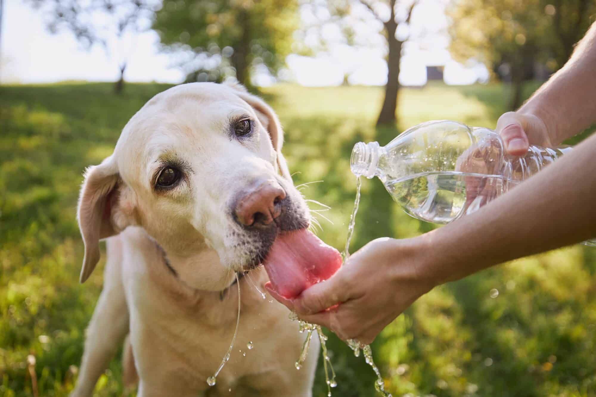
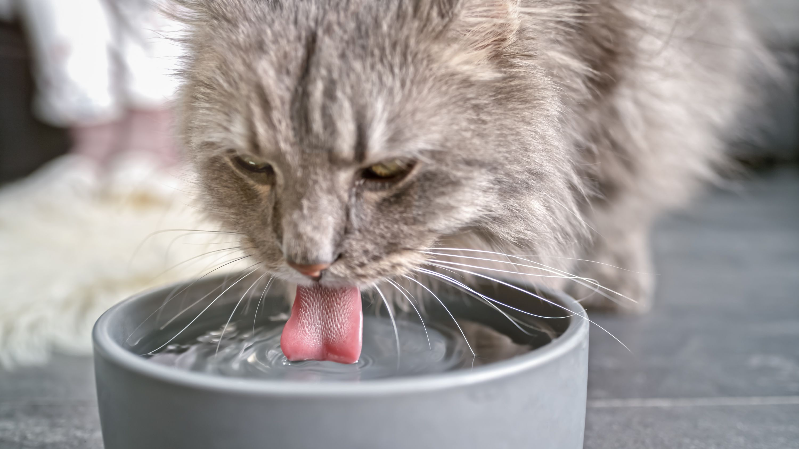

Alimentación
La importancia del agua: Claves de hidratación para tu mascota
A menudo centramos la nutrición en el alimento balanceado, pero el componente nutricional más esencial para cualquier ser vivo es el agua. La hidratación adecuada es vital para la salud general, el metabolismo y el bienestar de perros y gatos, y su deficiencia puede causar problemas graves en muy poco tiempo.
1. ¿Por qué el agua es un nutriente esencial?
El cuerpo de un perro o gato adulto está compuesto por aproximadamente un 60-70% de agua. Este líquido es indispensable para casi todas las funciones corporales, incluyendo:
- Digestión y Absorción: El agua ayuda a descomponer los alimentos y permite que los nutrientes se absorban en el intestino.
- Transporte de Nutrientes: Actúa como el "vehículo" que lleva el oxígeno y los nutrientes a todas las células del cuerpo.
- Regulación de la Temperatura: A través del jadeo (en perros) y la transpiración (en las almohadillas), el agua ayuda a disipar el calor y mantener una temperatura corporal estable.
- Función de Órganos: Es vital para la salud de los riñones (eliminando toxinas) y el funcionamiento del cerebro.
2. ¿Cuánta agua debe beber mi mascota?
La cantidad varía enormemente según la edad, el tamaño, el nivel de actividad, el clima y el tipo de dieta. Un perro que come un alimento seco (como un balanceado Súper Premium) necesitará beber más agua que uno que consume una dieta húmeda.
Una regla general es que un perro debe beber aproximadamente 50-60 ml de agua por cada kilogramo de peso corporal al día. Sin embargo, en lugar de medir, la mejor práctica es simplemente asegurar el acceso constante a agua fresca y limpia.
3. Signos de deshidratación
La deshidratación leve puede ser difícil de notar, pero es importante reconocer los signos antes de que se vuelva grave:
- Encías secas o pálidas.
- Letargo o falta de energía.
- Ojos de apariencia hundida.
- Pérdida de elasticidad en la piel (si pellizcas suavemente la piel de su espalda y no vuelve a su lugar rápidamente).
Si notas estos signos, especialmente si se combinan con vómitos o diarrea, contacta a tu veterinario de inmediato.
4. Tips para mantener a tu mascota hidratada
La prevención es simple. Asegúrate de que tu mascota siempre tenga agua disponible.
- Limpia el bol: Lava su bebedero diariamente para evitar la acumulación de bacterias (baba), lo que puede disuadirlos de beber.
- Agua fresca siempre: Rellena el bol varias veces al día.
- Múltiples ubicaciones: Coloca varios bebederos en la casa, especialmente si tienes varios pisos o mascotas.
- Para gatos: Los gatos suelen ser quisquillosos. Prefieren el agua lejos de su comida y, a menudo, les atrae el agua en movimiento (una fuente de agua para gatos puede ser una gran inversión).